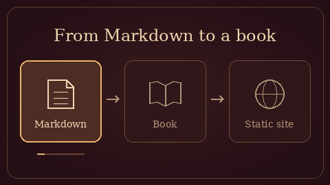

Images, video, and diagrams
Use Markdown image syntax for still images, animated GIFs, and MP4 files. Resolve local paths from the chapter that uses them. The static build bundles referenced local media.
Images and GIFs
Use AVIF, WebP, PNG, JPEG, or GIF. Write an alt description inside the brackets.



MP4
An MP4 renders as a video player inside the page. Playback pauses when you turn away from it.

YouTube and Vimeo
Use the video URL in the same syntax. The embedded player loads when the reader selects it. The source link still works when the video owner restricts embedding.


Mermaid diagrams
Set the language of a fenced code block to mermaid. Select the diagram to open the viewer, then zoom and drag to explore. You can also pan with the arrow keys and press Escape to return to the page.
flowchart LR
subgraph Source
Markdown[Markdown chapters]
Settings[Project settings]
Art[Images and video]
end
subgraph Build
Books[Sort books and chapters]
Paper[Split pages at H2]
Links[Resolve links and media]
end
subgraph Output
Library[Library]
Chapters[Chapter HTML]
Sitemap[Sitemap]
end
Markdown --> Books --> Paper --> Chapters
Art --> Links --> Chapters
Settings --> Library
Settings --> Sitemap
Books --> Library